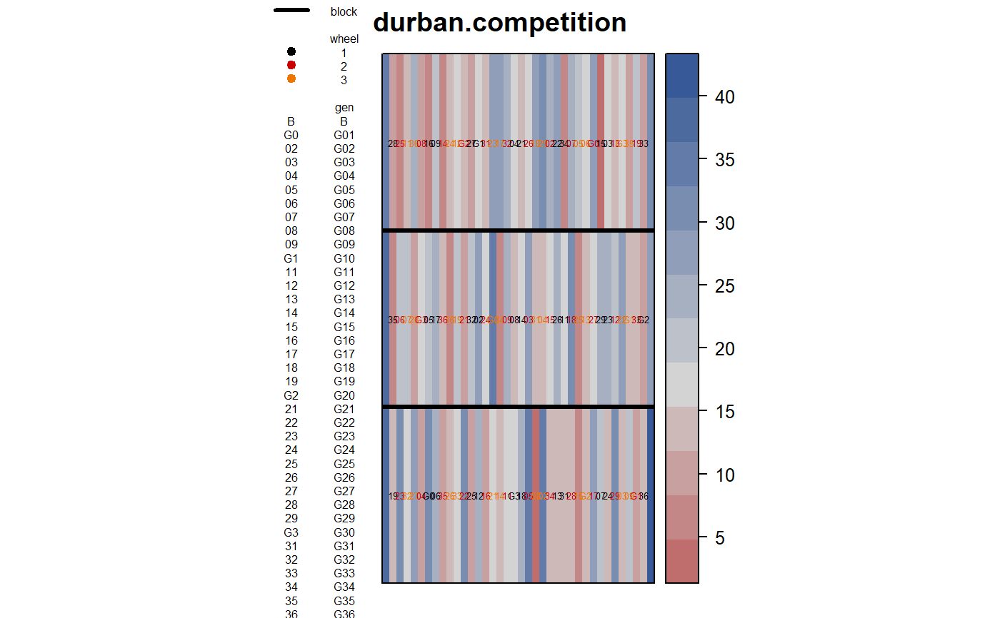
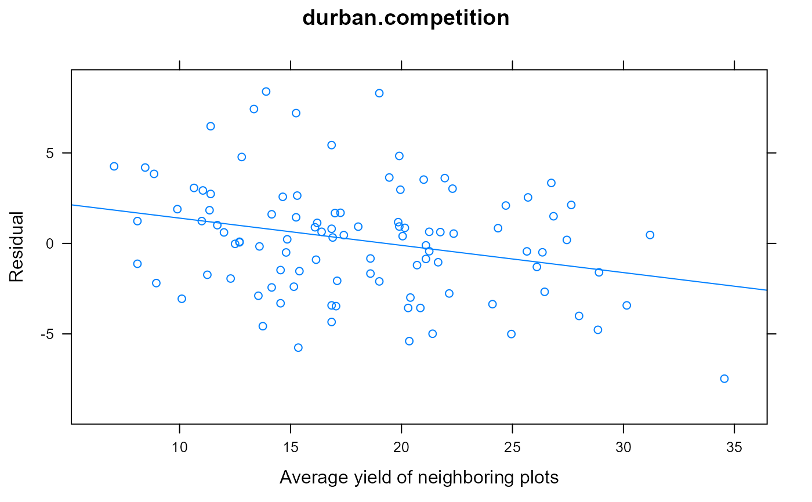

durban.competition.RdSugar beet yields with competition effects
A data frame with 114 observations on the following 5 variables.
genGenotype factor, 36 levels plus Border
colColumn
blockRow/Block
wheelPosition relative to wheel tracks
yieldRoot yields, kg/plot
This sugar-beet trial was conducted in 1979.
Single-row plots, 12 m long, 0.5 m between rows. Each block is made up of all 36 genotypes laid out side by side. Guard/border plots are at each end. Root yields were collected.
Wheel tracks are located between columns 1 and 2, and between columns 5 and 6, for each set of six plots. Each genotype was randomly allocated once to each pair of plots (1,6), (2,5), (3,4) across the three reps. Wheel effect were not significant in _this_ trial.
Field width: 18m + 1m guard rows = 19m
Field length: 3 blocks * 12m + 2*0.5m spacing = 37m Retrieved from http://www.ma.hw.ac.uk/~iain/research/JAgSciData/data/Trial1.dat
Used with permission of Iain Currie.
Durban, M., Currie, I. and R. Kempton, 2001. Adjusting for fertility and competition in variety trials. J. of Agricultural Science, 136, 129--140.
# \dontrun{ library(agridat) data(durban.competition) dat <- durban.competition # Check that genotypes were balanced across wheel tracks. with(dat, table(gen,wheel))#> wheel #> gen 1 2 3 #> B 0 0 0 #> G01 1 1 1 #> G02 1 1 1 #> G03 1 1 1 #> G04 1 1 1 #> G05 1 1 1 #> G06 1 1 1 #> G07 1 1 1 #> G08 1 1 1 #> G09 1 1 1 #> G10 1 1 1 #> G11 1 1 1 #> G12 1 1 1 #> G13 1 1 1 #> G14 1 1 1 #> G15 1 1 1 #> G16 1 1 1 #> G17 1 1 1 #> G18 1 1 1 #> G19 1 1 1 #> G20 1 1 1 #> G21 1 1 1 #> G22 1 1 1 #> G23 1 1 1 #> G24 1 1 1 #> G25 1 1 1 #> G26 1 1 1 #> G27 1 1 1 #> G28 1 1 1 #> G29 1 1 1 #> G30 1 1 1 #> G31 1 1 1 #> G32 1 1 1 #> G33 1 1 1 #> G34 1 1 1 #> G35 1 1 1 #> G36 1 1 1libs(desplot) desplot(dat, yield ~ col*block, out1=block, text=gen, col=wheel, aspect=37/19, # true aspect main="durban.competition")# Calculate residual after removing block/genotype effects m1 <- lm(yield ~ gen + block, data=dat) dat$res <- resid(m1) ## desplot(dat, res ~ col*block, out1=block, text=gen, col=wheel, ## main="durban.competition - residuals") # Calculate mean of neighboring plots dat$comp <- NA dat$comp[3:36] <- ( dat$yield[2:35] + dat$yield[4:37] ) / 2 dat$comp[41:74] <- ( dat$yield[40:73] + dat$yield[42:75] ) / 2 dat$comp[79:112] <- ( dat$yield[78:111] + dat$yield[80:113] ) / 2 # Demonstrate the competition effect # Competitor plots have low/high yield -> residuals are negative/positive libs(lattice) xyplot(res~comp, dat, type=c('p','r'), main="durban.competition", xlab="Average yield of neighboring plots", ylab="Residual")# }